UEFA EUROS!
EUROS
European Championship, in football (soccer), a quadrennial tournament held between the member countries of the Union of European Football Associations (UEFA). The European Championship is second in prestige to the World Cup among international football tournaments.
The first final of the European Championship (then known as the European Nations’ Cup) took place in 1960 after two years of preliminary contests between 17 national football clubs. In 1960 the Euro final tournament consisted of four teams, but it expanded to eight teams in 1980 and 16 teams in 1996. Currently, qualification for a European Championship begins two years before the scheduled final when all members of UEFA begin playing among themselves to earn a berth in the 16-team tournament (the qualification process does not include the host country or countries, which automatically qualify for the final).
Here's a list of past winners of Euros
| Year | Winner | Score | Runner-up |
|---|---|---|---|
| 1960 | U.S.S.R. | 2-1 | Yugoslavia |
| 1964 | Spain | 2-1 | U.S.S.R. |
| 1968 | Italy | 2-0 | Yugoslavia |
| 1972 | West Germany | 3-0 | U.S.S.R. |
| 1976 | Czechoslovakia* | 2-2 | West Germany |
| 1980 | West Germany | 2-1 | Belgium |
| 1984 | France | 2-0 | Spain |
| 1988 | Netherlands | 2-0 | U.S.S.R. |
| 1992 | Denmark | 2-0 | Germany |
| 1996 | Germany | 2-1 | Czech Republic |
| 2000 | France | 2-1 | Italy |
| 2004 | Greece | 1-0 | Portugal |
| 2008 | Spain | 1-0 | Germany |
| 2012 | Spain | 4-0 | Italy |
| 2016 | Portugal | 1-0 | France |
| 2020** | Italy*** | 1-1 | England |
*Czechoslovakia won penalty shoot-out 5–3.
**Postponed until 2021 because of the COVID-19 pandemic.
***Italy won penalty shoot-out 3–2.
Participating teams in Euros 2024
Italy
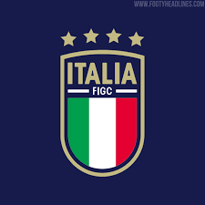Goalkeepers: Gianluigi Donnarumma (Paris), Alex Meret (Napoli), Guglielmo Vicario (Tottenham)
Defenders: Alessandro Bastoni (Inter), Raoul Bellanova (Torino), Alessandro Buongiorno (Torino), Riccardo Calafiori (Bologna), Andrea Cambiaso (Juventus), Matteo Darmian (Inter), Giovanni Di Lorenzo (Napoli), Federico Dimarco (Inter), Federico Gatti (Juventus), Gianluca Mancini (Roma)
Midfielders: Nicolò Barella (Inter), Bryan Cristante (Roma), Nicolò Fagioli (Juventus), Davide Frattesi (Inter), Jorginho (Arsenal), Lorenzo Pellegrini (Roma)
Forwards: Federico Chiesa (Juventus), Stephan El Shaarawy (Roma), Michael Folorunsho (Hellas Verona), Giacomo Raspadori (Napoli), Mateo Retegui (Genoa), Gianluca Scamacca (Atalanta), Mattia Zaccagni (Lazio)
Germany
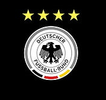
Goalkeepers: Oliver Baumann (Hoffenheim), Manuel Neuer (Bayern München), Marc-André ter Stegen (Barcelona)
Defenders: Waldemar Anton (Stuttgart), Emre Can (Dortmund), Benjamin Henrichs (Leipzig), Joshua Kimmich (Bayern München), Robin Koch (Frankfurt), Maximilian Mittelstädt (Stuttgart), David Raum (Leipzig), Antonio Rüdiger (Real Madrid), Nico Schlotterbeck (Dortmund), Jonathan Tah (Leverkusen)
Midfielders: Robert Andrich (Leverkusen), Chris Führich (Stuttgart), İlkay Gündoğan (Barcelona), Pascal Gross (Brighton), Toni Kroos (Real Madrid), Jamal Musiala (Bayern München), Leroy Sané (Bayern München), Florian Wirtz (Leverkusen)
Forwards: Maximilian Beier (Hoffenheim), Niclas Füllkrug (Dortmund), Kai Havertz (Arsenal), Thomas Müller (Bayern München), Deniz Undav (Stuttgart)
Portugal
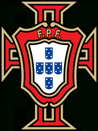
Goalkeepers: Diogo Costa (Porto), Rui Patrício (Roma), José Sá (Wolves)
Defenders: João Cancelo (Barcelona), Diogo Dalot (Manchester United), Rúben Dias (Manchester City), Gonçalo Inácio (Sporting CP), Nuno Mendes (Paris), Pepe (Porto), Nélson Semedo (Wolves), António Silva (Benfica)
Midfielders: Danilo (Paris), Bruno Fernandes (Manchester United), Pedro Neto (Wolves), João Neves (Benfica), Rúben Neves (Al-Hilal), Matheus Nunes (Manchester City), João Palhinha (Fulham), Bernardo Silva (Manchester City), Vitinha (Paris)
Forwards: Francisco Conceição (Porto), João Félix (Barcelona), Diogo Jota (Liverpool), Rafael Leão (AC Milan), Gonçalo Ramos (Paris), Cristiano Ronaldo (Al-Nassr)
France

Goalkeepers: Alphonse Areola (West Ham), Mike Maignan (AC Milan), Brice Samba (Lens)
Defenders: Jonathan Clauss (Marseille), Theo Hernández (AC Milan), Ibrahima Konaté (Liverpool), Jules Koundé (Barcelona), Ferland Mendy (Real Madrid), Benjamin Pavard (Inter), William Saliba (Arsenal), Dayot Upamecano (Bayern München)
Midfielders: Eduardo Camavinga (Real Madrid), Youssouf Fofana (Monaco), Antoine Griezmann (Atlético de Madrid), N'Golo Kanté (Al-Nassr), Adrien Rabiot (Juventus), Aurélien Tchouameni (Real Madrid), Warren Zaïre-Emery (Paris)
Forwards: Bradley Barcola (Paris), Kingsley Coman (Bayern München), Ousmane Dembélé (Paris), Olivier Giroud (AC Milan), Randal Kolo Muani (Paris), Kylian Mbappé (Paris), Marcus Thuram (Inter)
England
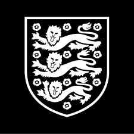
Goalkeepers: Dean Henderson (Crystal Palace), Jordan Pickford (Everton), Aaron Ramsdale (Arsenal)
Defenders: Trent Alexander-Arnold (Liverpool), Lewis Dunk (Brighton), Joe Gomez (Liverpool), Marc Guéhi (Crystal Palace), Ezri Konsa (Aston Villa), Luke Shaw (Manchester United), John Stones (Manchester City), Kieran Trippier (Newcastle), Kyle Walker (Manchester City)
Midfielders: Jude Bellingham (Real Madrid), Phil Foden (Manchester City), Conor Gallagher (Chelsea), Kobbie Mainoo (Manchester United), Cole Palmer (Chelsea), Declan Rice (Arsenal), Adam Wharton (Crystal Palace)
Forwards: Jarrod Bowen (West Ham), Eberechi Eze (Crystal Palace), Anthony Gordon (Newcastle), Harry Kane (Bayern München), Bukayo Saka (Arsenal), Ivan Toney (Brentford), Ollie Watkins (Aston Villa)
Netherlands
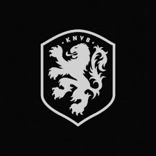
Goalkeepers: Justin Bijlow (Feyenoord), Mark Flekken (Brentford), Bart Verbruggen (Brighton)
Defenders: Nathan Aké (Manchester City), Daley Blind (Girona), Matthijs de Ligt (Bayern München), Stefan de Vrij (Inter), Denzel Dumfries (Inter), Lutsharel Geertruida (Feyenoord), Micky van de Ven (Tottenham), Virgil van Dijk (Liverpool)
Midfielders: Ryan Gravenberch (Liverpool), Ian Maatsen (Dortmund), Tijjani Reijnders (AC Milan), Jerdy Schouten (PSV), Joey Veerman (PSV), Georginio Wijnaldum (Al Ettifaq)
Forwards: Steven Bergwijn (Ajax), Brian Brobbey (Ajax), Memphis Depay (Atlético de Madrid), Jeremie Frimpong (Leverkusen), Cody Gakpo (Liverpool), Donyell Malen (Dortmund), Xavi Simons (Leipzig), Wout Weghorst (Hoffenheim), Joshua Zirkzee (Bologna)
Switzerland
Goalkeepers: Gregor Kobel (Dortmund), Yvon Mvogo (Lorient), Yann Sommer (Inter)
Defenders: Manuel Akanji (Manchester City), Nico Elvedi (Mönchengladbach), Ricardo Rodríguez (Torino), Fabian Schär (Newcastle), Leonidas Stergiou (Stuttgart), Silvan Widmer (Mainz), Cédric Zesiger (Wolfsburg)
Midfielders: Michel Aebischer (Bologna), Remo Freuler (Bologna), Ardon Jashari (Luzern), Fabian Rieder (Rennes), Xherdan Shaqiri (Chicago Fire), Vincent Sierro (Toulouse), Renato Steffen (Lugano), Ruben Vargas (Augsburg), Granit Xhaka (Leverkusen), Denis Zakaria (Monaco), Steven Zuber (AEK Athens)
Forwards: Zeki Amdouni (Burnley), Kwadwo Duah (Ludogorets), Breel Embolo (Monaco), Dan Ndoye (Bologna), Noah Okafor (AC Milan)
Turkiye
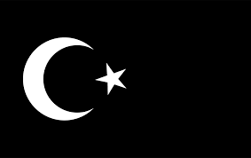
Goalkeepers: Altay Bayındır (Manchester United), Mert Günok (Beşiktaş), Uğurcan Çakır (Trabzonspor)
Defenders: Samet Akaydin (Panathinaikos), Abdülkerim Bardakcı (Galatasaray), Zeki Çelik (Roma), Merih Demiral (Al-Ahli), Ferdi Kadıoğlu (Fenerbahçe), Ahmetcan Kaplan (Ajax), Mert Müldür (Fenerbahçe)
Midfielders: Hakan Çalhanoğlu (Inter), İsmail Yüksek (Fenerbahçe), Kaan Ayhan (Galatasaray), Okay Yokuşlu (West Brom), Orkun Kökçü (Benfica), Salih Özcan (Dortmund)
Forwards: Yunus Akgün (Leicester), Kerem Aktürkoğlu (Galatasaray), Arda Güler (Real Madrid), İrfan Can Kahveci (Fenerbahçe), Semih Kılıçsoy (Beşiktaş), Cenk Tosun (Beşiktaş), Yusuf Yazıcı (Lille), Bertuğ Yıldırım (Rennes), Kenan Yıldız (Juventus), Barış Alper Yılmaz (Galatasaray)
Croatia
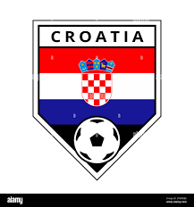
Goalkeepers: Ivica Ivušić (Pafos), Nediljko Labrović (Rijeka), Dominik Livaković (Fenerbahçe)
Defenders: Martin Erlić (Sassuolo), Joško Gvardiol (Manchester City), Josip Juranović (Union Berlin), Marin Pongračić (Lecce), Borna Sosa (Ajax), Josip Stanišić (Leverkusen), Josip Šutalo (Ajax), Domagoj Vida (AEK Athens)
Midfielders: Martin Baturina (Dinamo Zagreb), Marcelo Brozović (Al-Nassr), Mateo Kovačić (Manchester City), Lovro Majer (Wolfsburg), Luka Modrić (Real Madrid), Mario Pašalić (Atalanta), Luka Sučić (Salzburg), Nikola Vlašić (Torino)
Forwards: Ante Budimir (Osasuna), Luka Ivanušec (Feyenoord), Andrej Kramarić (Hoffenheim), Marco Pašalić (Rijeka), Ivan Perišić (Hajduk Split), Bruno Petković (Dinamo Zagreb), Marko Pjaca (Rijeka)
Belgium
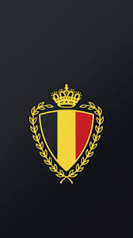
Goalkeepers: Koen Casteels (Wolfsburg), Thomas Kaminski (Luton), Matz Sels (Nottingham Forest)
Defenders: Timothy Castagne (Fulham), Zeno Debast (Anderlecht), Wout Faes (Leicester), Thomas Meunier (Trabzonspor), Arthur Theate (Rennes), Jan Vertonghen (Anderlecht)
Midfielders: Kevin De Bruyne (Manchester City), Maxim De Cuyper (Club Brugge), Orel Mangala (Lyon), Amadou Onana (Everton), Youri Tielemans (Aston Villa), Leandro Trossard (Arsenal), Arthur Vermeeren (Atlético de Madrid), Aster Vranckx (Wolfsburg), Axel Witsel (Atlético de Madrid)
Forwards: Johan Bakayoko (PSV Eindhoven), Yannick Carrasco (Al-Shabab), Charles De Ketelaere (Atalanta), Jérémy Doku (Manchester City), Romelu Lukaku (Roma), Dodi Lukebakio (Sevilla), Loïs Openda (Leipzig)
Austria
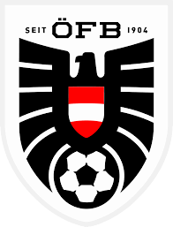
Goalkeepers: Niklas Hedl (Rapid Wien), Heinz Lindner (Union SG), Patrick Pentz (Brøndby)
Defenders: Flavius Daniliuc (Salzburg), Kevin Danso (Lens), Philipp Lienhart (Freiburg), Phillipp Mwene (Mainz), Stefan Posch (Bologna), Leopold Querfeld (Rapid Wien), Gernot Trauner (Feyenoord), Patrick Wimmer (Wolfsburg), Maximilian Wöber (Mönchengladbach)
Midfielders: Christoph Baumgartner (Leipzig), Florian Grillitsch (Hoffenheim), Marco Grüll (Rapid Wien), Florian Kainz (Köln), Konrad Laimer (Bayern München), Alexander Prass (Sturm Graz), Marcel Sabitzer (Dortmund), Romano Schmid (Werder Bremen), Matthias Seidl (Rapid Wien), Nicolas Seiwald (Leipzig)
Forwards: Marko Arnautović (Inter), Maximilian Entrup (Hartberg), Michael Gregoritsch (Freiburg), Andreas Weimann (West Brom)
Denmark
Goalkeepers: Mads Hermansen (Leicester), Frederik Rønnow (Union Berlin), Kasper Schmeichel (Anderlecht)
Defenders: Joachim Andersen (Crystal Palace), Alexander Bah (Benfica), Andreas Christensen (Barcelona), Mathias Jørgensen (Brentford), Simon Kjær (AC Milan), Rasmus Kristensen (Roma), Victor Kristiansen (Bologna), Joakim Mæhle (Wolfsburg), Jannik Vestergaard (Leicester)
Midfielders: Jacob Bruun Larsen (Burnley), Thomas Delaney (Anderlecht), Anders Dreyer (Anderlecht), Christian Eriksen (Manchester United), Morten Hjulmand (Sporting CP), Pierre-Emile Højbjerg (Tottenham), Mathias Jensen (Brentford), Christian Nørgaard (Brentford)
Forwards: Mikkel Damsgaard (Brentford), Kasper Dolberg (Anderlecht), Rasmus Højlund (Manchester United), Andreas Skov Olsen (Club Brugge), Yussuf Poulsen (Leipzig), Jonas Wind (Wolfsburg)
Georgia
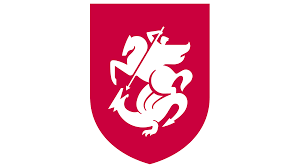
Goalkeepers: Luka Gugeshashvili (Qarabağ), Giorgi Loria (Dinamo Tbilisi), Giorgi Mamardashvili (Valencia)
Defenders: Lasha Dvali (APOEL), Giorgi Gocholeishvili (Shakhtar Donetsk), Giorgi Gvelesiani (Persepolis), Otar Kakabadze (Cracovia), Guram Kashia (Slovan Bratislava), Solomon Kverkvelia (Al-Okhdood), Luka Lochoshvili (Cremonese), Jemal Tabidze (Panetolikos)
Midfielders: Sandro Altunashvili (Wolfsberger), Giorgi Chakvetadze (Watford), Zuriko Davitashvili (Bordeaux), Otar Kiteishvili (Sturm Graz), Giorgi Kochorashvili (Levante), Nika Kvekveskiri (Lech Poznań), Saba Lobjanidze (Atlanta United), Anzor Mekvabishvili (Universitatea Craiova), Gabriel Sigua (Basel), Levan Shengelia (Panetolikos), Giorgi Tsitaishvili (Dinamo Batumi)
Forwards: Khvicha Kvaratskhelia (Napoli), Giorgi Kvilitaia (APOEL), Georges Mikautadze (Metz), Budu Zivzivadze (Karlsruhe)
Romania
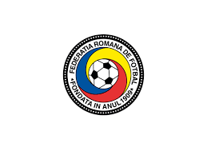
Goalkeepers: Horațiu Moldovan (Atlético de Madrid), Florin Niță (Gaziantep), Ștefan Târnovanu (FCSB)
Defenders: Nicușor Bancu (Universitatea Craiova), Andrei Burcă (Al-Okhdood), Radu Drăguşin (Tottenham), Vasile Mogoş (CFR Cluj), Ionuț Nedelcearu (Palermo), Bogdan Racovițan (Rakow), Andrei Rațiu (Rayo Vallecano), Adrian Rus (Pafos)
Midfielders: Alexandru Cicâldău (Konyaspor), Ianis Hagi (Alavés), Marius Marin (Pisa), Răzvan Marin (Empoli), Darius Olaru (FCSB), Deian Sorescu (Gaziantep), Nicolae Stanciu (Damac), Adrian Şut (FCSB)
Forwards: Denis Alibec (Muaither), Daniel Bîrligea (CFR Cluj), Florinel Coman (FCSB), Denis Drăguş (Gaziantep), Dennis Man (Parma), Valentin Mihăilă (Parma), George Puşcaş (Bari)
Slovakia
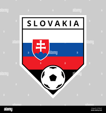
Goalkeepers: Martin Dúbravka (Newcastle), Henrich Ravas (New England), Marek Rodák (Fulham)
Defenders: Vernon De Marco (Hatta), Norbert Gyömbér (Salernitana), Dávid Hancko (Feyenoord), Sebastián Kóša (Spartak Trnava), Adam Obert (Cagliari), Peter Pekarík (Hertha Berlin), Milan Škriniar (Paris), Denis Vavro (Copenhagen)
Midfielders: László Bénes (Hamburg), Matúš Bero (Bochum), Ondrej Duda (Hellas Verona), Patrik Hrošovský (Genk), Juraj Kucka (Slovan Bratislava), Stanislav Lobotka (Napoli), Tomáš Rigo (Ostrava)
Forwards: Róbert Boženík (Boavista), Dávid Ďuriš (Ascoli), Lukáš Haraslín (Sparta Praha), Leo Sauer (Feyenoord), Ivan Schranz (Slavia Praha), David Strelec (Slovan Bratislava), Tomáš Suslov (Verona), Ľubomír Tupta (Slovan Liberec)
Slovenia
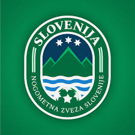
Goalkeepers: Vid Belec (APOEL), Jan Oblak (Atlético de Madrid), Igor Vekić (Vejle)
Defenders: Jure Balkovec (Alanyaspor), Jaka Bijol (Udinese), Miha Blažič (Lech Poznań), David Brekalo (Orlando City), Vanja Drkušić (Sochi), Erik Janža (Górnik Zabrze), Žan Karničnik (Celje), Jon Gorenc Stanković (Sturm Graz), Petar Stojanović (Sampdoria)
Midfielders: Timi Elšnik (Olimpija Ljubljana), Adam Gnezda Čerin (Panathinaikos), Tomi Horvat (Sturm Graz), Josip Iličić (Maribor), Jasmin Kurtić (Südtirol), Sandi Lovrić (Udinese), Benjamin Verbič (Panathinaikos), Adrian Zeljković (Spartak Trnava), Nino Žugelj (Bodø/Glimt)
Forwards: Žan Celar (Lugano), Jan Mlakar (Pisa), Benjamin Šeško (Leipzig), Andraž Šporar (Panathinaikos), Žan Vipotnik (Bordeaux)
Ukraine
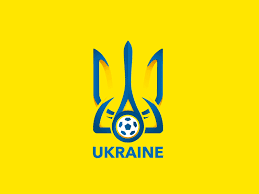
Goalkeepers: Georgiy Bushchan (Dynamo Kyiv), Andriy Lunin (Real Madrid), Anatoliy Trubin (Benfica)
Defenders: Valeriy Bondar (Shakhtar Donetsk), Yukhym Konoplia (Shakhtar Donetsk), Mykola Matviyenko (Shakhtar Donetsk), Bogdan Mykhaylichenko (Polissya Zhytomyr), Vitaliy Mykolenko (Everton), Oleksandr Svatok (Dnipro-1), Maksym Talovierov (LASK), Oleksandr Tymchyk (Dynamo Kyiv), Illia Zabarnyi (Bournemouth), Oleksandr Zinchenko (Arsenal)
Midfielders: Volodymyr Brazhko (Dynamo Kyiv), Ruslan Malinovskyi (Genoa), Mykola Shaparenko (Dynamo Kyiv), Taras Stepanenko (Shakhtar Donetsk), Georgiy Sudakov (Shakhtar Donetsk), Serhiy Sydorchuk (Westerlo), Viktor Tsygankov (Girona), Andriy Yarmolenko (Dynamo Kyiv), Oleksandr Zubkov (Shakhtar Donetsk)
Forwards: Artem Dovbyk (Girona), Mykhailo Mudryk (Chelsea), Vladyslav Vanat (Dynamo Kyiv), Roman Yaremchuk (Valencia)
Albania
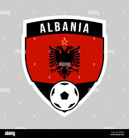
Goalkeepers: Etrit Berisha (Empoli), Elhan Kastrati (Cittadella), Thomas Strakosha (Brentford)
Defenders: Arlind Ajeti (CFR Cluj), Naser Aliji (Voluntari), Iván Balliu (Rayo Vallecano), Berat Djimsiti (Atalanta), Elseid Hysaj (Lazio), Ardian Ismajli (Empoli), Marash Kumbulla (Sassuolo), Enea Mihaj (Famalicão), Mario Mitaj (Lokomotiv Moskva)
Midfielders: Amir Abrashi (Grasshoppers), Kristjan Asllani (Inter), Nedim Bajrami (Sassuolo), Klaus Gjasula (Darmstadt), Qazim Laçi (Sparta Praha), Ylber Ramadani (Lecce), Taulant Seferi (Baniyas)
Forwards: Jasir Asani (Gwangju), Medon Berisha (Lecce), Armando Broja (Fulham), Mirlind Daku (Rubin Kazan), Arbër Hoxha (Dinamo Zagreb), Rey Manaj (Sivasspor), Ernest Muçi (Beşiktaş)
Czechia
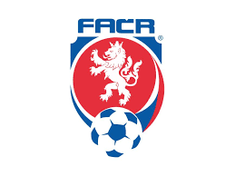
Goalkeepers: Vítězslav Jaroš (Sturm Graz), Matěj Kovář (Leverkusen) Jindřich Staněk (Slavia Praha)
Defenders: Vladimír Coufal (West Ham), David Douděra (Slavia Praha), Robin Hranáč (Viktoria Plzeň), David Jurásek (Hoffenheim), Ladislav Krejčí (Sparta Praha), Martin Vitík (Sparta Praha), Tomáš Vlček (Slavia Praha), David Zima (Slavia Praha)
Midfielders: Antonín Barák (Fiorentina), Lukáš Červ (Viktoria Plzeň), Tomáš Holeš (Slavia Praha), Matěj Jurásek (Slavia Praha), Ondřej Lingr (Feyenoord), Lukáš Provod (Slavia Praha), Petr Ševčík (Slavia Praha), Tomáš Souček (West Ham), Pavel Šulc (Viktoria Plzeň)
Forwards: Václav Černý (Wolfsburg), Tomáš Chorý (Viktoria Plzeň), Mojmír Chytil (Slavia Praha), Adam Hložek (Leverkusen), Jan Kuchta (Sparta Praha), Patrik Schick (Leverkusen)
Poland
Goalkeepers: Marcin Bulka (Nice), Łukasz Skorupski (Bologna), Wojciech Szczęsny (Juventus)
Defenders: Jan Bednarek (Southampton), Bartosz Bereszyński (Empoli), Przemysław Frankowski (Lens), Jakub Kiwior (Arsenal), Tymoteusz Puchacz (Kaiserslautern), Bartosz Salamon (Lech Poznań), Sebastian Walukiewicz (Empoli)
Midfielders: Paweł Dawidowicz (Hellas Verona), Kamil Grosicki (Pogoń Szczecin), Jakub Moder (Brighton), Jakub Piotrowski (Ludogorets), Taras Romanczuk (Jagiellonia Białystok), Bartosz Slisz (Atlanta United), Damian Szymański (AEK Athens), Sebastian Szymański (Fenerbahçe), Kacper Urbański (Bologna), Nicola Zalewski (Roma), Piotr Zieliński (Napoli)
Forwards: Adam Buksa (Antalyaspor), Robert Lewandowski (Barcelona), Krzysztof Piątek (Başakşehir), Michał Skóraś (Club Brugge), Karol Świderski (Hellas Verona)
Scotland
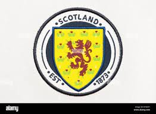
Goalkeepers: Zander Clark (Hearts), Angus Gunn (Norwich), Liam Kelly (Motherwell)
Defenders: Liam Cooper (Leeds), Grant Hanley (Norwich), Jack Hendry (Al-Ettifaq), Ross McCrorie (Bristol City), Scott McKenna (Copenhagen), Ryan Porteous (Watford), Anthony Ralston (Celtic), Andrew Robertson (Liverpool), Greg Taylor (Celtic), Kieran Tierney (Real Sociedad)
Midfielders: Stuart Armstrong (Southampton), James Forrest (Celtic), Billy Gilmour (Brighton), Ryan Jack (Rangers), John McGinn (Aston Villa), Callum McGregor (Celtic), Kenny McLean (Norwich), Scott McTominay (Manchester United), Lewis Morgan (New York RB)
Forwards: Ché Adams (Southampton), Ryan Christie (Bournemouth), Tommy Conway (Bristol City), Lawrence Shankland (Hearts)
Serbia
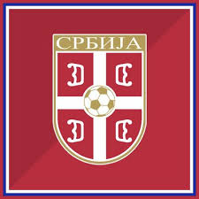
Goalkeepers: Vanja Milinković-Savić (Torino), Đorđe Petrović (Chelsea), Predrag Rajković (Mallorca)
Defenders: Srđan Babić (Spartak Moskva), Nikola Milenković (Fiorentina), Filip Mladenović (Panathinaikos), Strahinja Pavlović (Salzburg), Uroš Spajić (Crvena zvezda), Nemanja Stojić (TSC), Miloš Veljković (Werder Bremen)
Midfielders: Veljko Birmančević (Sparta Praha), Mijat Gaćinović (AEK Athens), Nemanja Gudelj (Sevilla), Ivan Ilić (Torino), Saša Lukić (Fulham), Nemanja Maksimović (Getafe), Srdjan Mijailović (Crvena zvezda), Sergej Milinković-Savić (Al-Hilal), Lazar Vujadin Samardžić (Udinese)
Forwards: Luka Jović (Milan), Filip Kostić (Juventus), Aleksandar Mitrović (Al-Hilal), Petar Ratkov (Salzburg), Dušan Tadić (Fenerbahçe), Dušan Vlahović (Juventus), Andrija Živković (PAOK)
Hungary
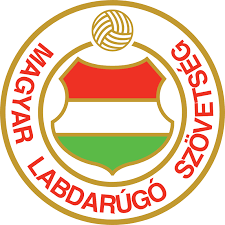
Goalkeepers: Dénes Dibusz (Ferencváros), Péter Gulácsi (Leipzig), Péter Szappanos (Paks)
Defenders: Botond Balogh (Parma), Bendegúz Bolla (Servette), Endre Botka (Ferencváros), Márton Dárdai (Hertha Berlin), Attila Fiola (Fehérvár), Miloš Kerkez (Bournemouth), Ádám Lang (Omonoia), Zsolt Nagy (Puskás Akadémia), Loïc Négo (Le Havre), Willi Orbán (Leipzig), Attila Szalai (Freiburg)
Midfielders: Dániel Gazdag (Philadelphia Union), Mihály Kata (MTK Budapest), László Kleinheisler (Hajduk Split), Ádám Nagy (Spezia), András Schäfer (Union Berlin), Callum Styles (Sunderland), Dominik Szoboszlai (Liverpool)
Forwards: Martin Ádám (Ulsan HD), Kevin Csoboth (Újpest), Kristofer Horváth (Kecskemét), Roland Sallai (Freiburg), Barnabás Varga (Ferencváros)
Spain
Goalkeepers: David Raya (Arsenal), Alejandro Remiro (Real Sociedad), Unai Simón (Athletic Club)
Defenders: Dani Carvajal (Real Madrid), Marc Cucurella (Chelsea), Alejandro Grimaldo (Leverkusen), Aymeric Laporte (Al-Nassr), Robin Le Normand (Real Sociedad), Nacho (Real Madrid), Daniel Vivian (Athletic Club)
Midfielders: Álex Baena (Villarreal), Mikel Merino (Real Sociedad), Mikel Oyarzabal (Real Sociedad), Pedri (Barcelona), Rodri (Manchester City), Fabián Ruiz (Paris), Nico Williams (Athletic Club), Martín Zubimendi (Real Sociedad)
Forwards: Joselu (Real Madrid), Fermín López (Barcelona), Álvaro Morata (Atlético de Madrid), Jesús Navas (Sevilla), Dani Olmo (Leipzig), Ayoze Pérez (Betis), Ferran Torres (Barcelona), Lamine Yamal (Barcelona)